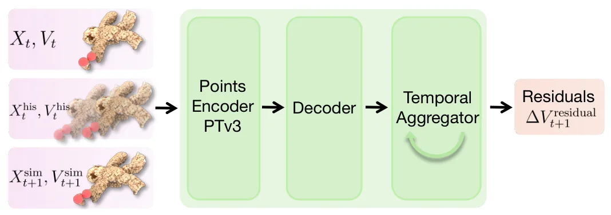
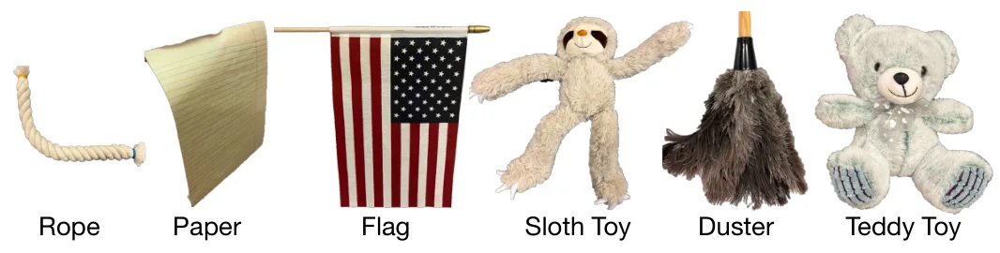
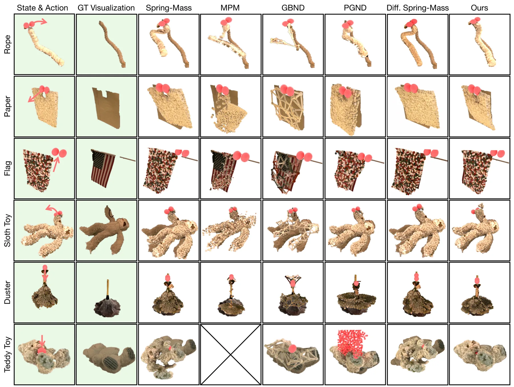
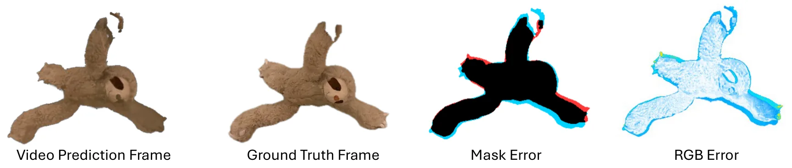
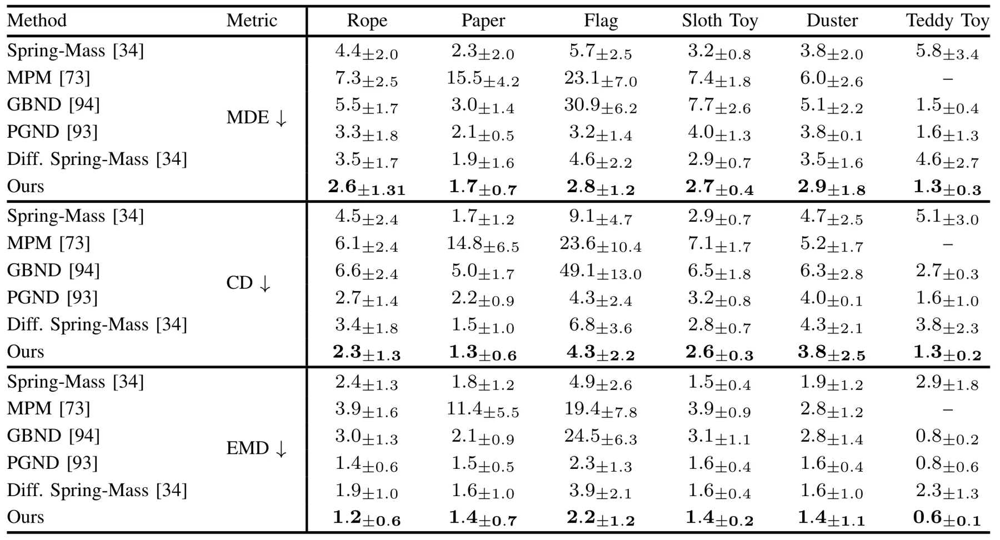
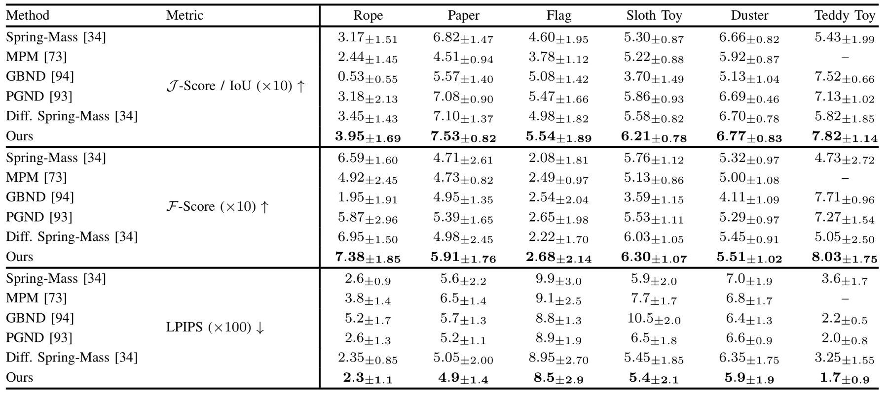

PGRD：面向可变形物体仿真的物理引导残差动力学学习Learning Physics-Guided Residual Dynamics for Deformable Object Simulation
混合物理—学习仿真和 3DGS 动态可视化具有旁侧价值，但核心是可变形物体操作而非 SLAM、定位或测量级重建。
一句话工作总结
以可优化弹簧—质量模型提供物理主干，再学习时序残差，服务可变形物体预测、MPC 操作和 3DGS 交互仿真。
摘要
PGRD 将可优化弹簧—质量仿真器作为物理骨干，并由神经网络学习对物理预测的残差修正。方法采用基于速度的稳定形式和滑动窗口 Transformer 捕获时间依赖，在多种真实可变形物体上优于纯物理与纯学习基线。作者进一步将模型用于基于 MPC 的操作规划，包括语言条件目标图像；还以 3D Gaussian Splatting 进行动作条件视频预测和交互式仿真。
Simulating deformable objects is essential for a wide range of robotic manipulation applications, yet accurately predicting their dynamics remains challenging. We propose Physics-Guided Residual Dynamics (PGRD), a hybrid simulation framework that combines the advantages of physics-based and learning-based approaches. Specifically, PGRD combines an optimizable spring-mass simulator as a backbone with a learned neural network that predicts residual corrections to the physics-based predictions. We adopt a velocity-based formulation to ensure stable simulation and a sliding-window transformer architecture to capture temporal dependencies. We show that PGRD produces more accurate results than both purely physics-based and learning-based methods on a set of diverse real-world deformable objects. We further demonstrate the utility of PGRD in two applications: manipulation planning via Model Predictive Control, including a language-conditioned setting with a generated goal image; and interactive simulation via action-conditioned video prediction by 3D Gaussian Splatting.
中文解读摘录
图表/页面预览

{kind=link}

{kind=link}

{kind=link}

{kind=link}

{kind=link}

{kind=link}
